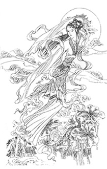

|
《广寒宫》 姮娥是姨娘，亦叫心月狐。 月宫是广寒，月人心更寒。 寒小挂九天，宫中冷美人。 广寒高在上，情系千山水。 姮娥天女来，夜飞天白狐。 相思化作泪，宫中玉女藏。 忆往昔，战天斗地耍威风。 看今朝， 孤苦零丁泪涟涟…… 多情浪子痴玄龙， 相思待几何? 唉，愁再再…… 天亦老，情难绝， 相见又几何? 相思情未了， 几度夕阳红…… 苦啊…… 一朝盼月明，众日盼月归。 几滴相思洒玉龙， 白衣素女心月狐。 举首望天河， 不管风高浪险， 真情永不改…… 脚踏祥云步五洲， 情深似海…… 明月当空照，香自苦寒来。 九天断魂遥在， 相见在咫尺…… 心归去，不停留， 尽在梦里头…… 若是登月去， 寒月花开时……
年千年知音少，寒星点点洱海山， 凡人尽说天上好，天仙却是戏凡间。  |